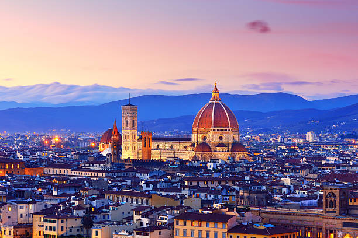

About Italy
Italy, a captivating European country known for its rich history, stunning art, and diverse culture, offers a blend of ancient heritage and modern charm. With its iconic cities, picturesque landscapes, and renowned cuisine, Italy is a destination that resonates with travelers seeking both cultural exploration and sensory delight.
Italy boasts a plethora of extraordinary landmarks that stand as testaments to its historical significance and architectural brilliance. These landmarks provide insights into Italy's storied past, its contributions to art and science, and its enduring influence on the world.
Among Italy's most famous landmarks is the Colosseum in Rome. This ancient amphitheater, built during the Roman Empire, is a symbol of grandeur and engineering prowess. It hosted gladiatorial contests and public spectacles and continues to draw visitors from around the globe, showcasing the magnificence of Roman architecture.
The Leaning Tower of Pisa is another iconic site that captures Italy's charm. Located in the city of Pisa, this architectural marvel is renowned for its unintended tilt, which has made it a world-famous curiosity and a symbol of human innovation despite challenges.
Whether indulging in delectable pasta dishes, exploring ancient ruins, or simply absorbing the vibrant atmosphere of Italian life, visitors to Italy are treated to an immersive experience that celebrates the country's rich heritage and contemporary allure.
Popular Destinations
In the Italy, there are lots of fantastic places to visit and explore. Some of them are as follows:
Rome
Rome, the capital city of Italy, is a treasure trove of history and culture. Explore iconic landmarks like the Colosseum, Roman Forum, and Pantheon that tell the tale of the ancient Roman Empire. Visit the Vatican City to marvel at St. Peter's Basilica and the Sistine Chapel, adorned with Michelangelo's masterpiece. Wander through charming streets, indulge in authentic Italian cuisine, and throw a coin into the Trevi Fountain for luck.

Florence
Florence, the birthplace of the Renaissance, is a city of art and elegance. Admire world-renowned works at the Uffizi Gallery, including Botticelli's "The Birth of Venus." Visit the Florence Cathedral (Duomo) with its iconic red dome and climb to the top for breathtaking views. Stroll across the Ponte Vecchio, a medieval bridge lined with jewelry shops, and explore the historic streets that inspired countless artists and thinkers.

Venice
Venice is a unique city built on canals, where gondolas glide through picturesque waterways. Explore St. Mark's Square with its stunning basilica and intricate architecture. Take a gondola ride along the Grand Canal, passing by elegant palaces and bridges. Lose yourself in the labyrinthine streets of Venice, and don't forget to visit the enchanting island of Murano, famous for its glassblowing tradition.

Cinque Terre
The Cinque Terre is a series of five charming coastal villages nestled along the rugged Ligurian coastline. Each village offers its own unique charm, colorful houses, and breathtaking views of the Mediterranean Sea. Hike along the cliffside trails that connect the villages, passing through vineyards and terraced gardens. Enjoy fresh seafood, relax on rocky beaches, and capture the essence of traditional Italian coastal life.

Amalfi Coast
The Amalfi Coast is a stunning stretch of coastline characterized by dramatic cliffs, vibrant towns, and crystal-clear waters. Visit the town of Amalfi with its impressive cathedral and explore the picturesque village of Positano with its cascading houses. Drive along the coastal road for breathtaking views or take a boat trip to discover hidden coves and grottoes.

Tuscany
Tuscany is a region known for its rolling hills, vineyards, and medieval towns. Explore the charming town of Siena with its impressive cathedral and historic Piazza del Campo. Visit the town of San Gimignano, famous for its medieval towers, and indulge in Tuscan wines and cuisine. The countryside is dotted with wineries and olive groves, offering a picturesque backdrop for relaxation and exploration.

Vatican City
Vatican City, the smallest independent state in the world, is a pilgrimage destination and a center of art and spirituality. Explore St. Peter's Square and enter St. Peter's Basilica to admire its grandeur. Visit the Vatican Museums to see a vast collection of art, including the renowned Sistine Chapel ceiling painted by Michelangelo.

Milan
Milan is a global fashion and design hub, known for its elegance and style. Admire the stunning architecture of the Milan Cathedral (Duomo) and visit Leonardo da Vinci's "The Last Supper" at Santa Maria delle Grazie. Explore the Galleria Vittorio Emanuele II, a grand shopping arcade, and indulge in haute couture and gourmet cuisine.

Naples
Naples is a city of rich history and vibrant culture, located near the iconic Mount Vesuvius. Explore the Naples National Archaeological Museum to see artifacts from the nearby Pompeii and Herculaneum ruins. Enjoy authentic Neapolitan pizza and explore the historic Spaccanapoli street, lined with bustling markets and shops.

Activities in Italy
Italy, a country rich in history, culture, and natural beauty, offers a diverse array of activities to suit every traveler's interests. From exploring ancient ruins to savoring exquisite cuisine, Italy promises a memorable journey filled with captivating experiences.
Cultural Treasures
Italy's cultural heritage spans millennia, evident in its art, architecture, and traditions. From the grandeur of ancient Rome's Colosseum and the timeless beauty of Florence's art galleries to the romantic canals of Venice, Italy's cultural marvels are a testament to its historical significance.

Natural Wonders
Italy's landscape ranges from the picturesque Amalfi Coast to the stunning beauty of the Italian Alps. Whether you're hiking in the Dolomites, basking in the charm of Tuscany's rolling hills, or relaxing on the Amalfi's sun-soaked beaches, Italy's natural beauty will leave you awe-inspired.

Historic Landmarks
Explore Italy's rich history through its iconic landmarks. Marvel at the architectural splendor of the Leaning Tower of Pisa, discover the preserved ruins of Pompeii, and immerse yourself in the artistic treasures of Vatican City, including Michelangelo's Sistine Chapel.

Coastal Escapes
Italy boasts a coastline that offers both relaxation and adventure. Relax on the beaches of Sicily, go sailing along the Amalfi Coast, or enjoy the glamour of the Italian Riviera. The sparkling Mediterranean waters offer endless opportunities for aquatic pursuits.

Winemaking and Vineyards
Embark on a journey through Italy's wine regions, such as Tuscany, Piedmont, and Sicily. Experience wine tastings amidst picturesque vineyards, learn about traditional winemaking techniques, and savor world-class vintages.

Whether you're an art aficionado, a culinary enthusiast, or an admirer of natural beauty, Italy's diverse offerings ensure that your visit will be a captivating and unforgettable experience.
Resources for Visiting Italy
Planning a trip to Italy? Here are some useful resources and tips to ensure your journey is seamless and memorable:
Travel Guides
Explore travel guides that offer insights into Italy's top attractions, local experiences, transportation options, and more. Websites like Lonely Planet, Rick Steves, and TripAdvisor provide valuable information for travelers looking to make the most of their Italian adventure.
Language
While English is commonly spoken in tourist areas, learning a few basic Italian phrases can enhance your experience and show respect for the local culture. Language learning apps like Duolingo or Babbel can help you grasp essential greetings and expressions.
Transportation
Navigate Italy's diverse regions by researching transportation options such as trains, buses, and domestic flights. The extensive rail network can be a convenient way to travel between cities and towns, offering scenic views along the way.
Accommodation
Choose from a wide range of accommodations, including historic boutique hotels, charming bed and breakfasts, and modern hostels. Booking platforms like Booking.com, Hotels.com, and Airbnb provide various options to match your preferences and budget.
Currency and Payments
The official currency in Italy is the Euro (EUR). It's widely accepted, but it's advisable to carry some cash for smaller establishments. Inform your bank about your travel plans to avoid any card usage issues during your trip.
Local Cuisine
Indulge in the rich flavors of Italian cuisine, known for its pasta, pizza, wines, and regional specialties. Explore local markets, savor dishes like "risotto," "gelato," and "espresso," and enjoy the culinary diversity that varies from region to region.
Safety and Health
Italy is generally safe, but it's always wise to stay informed about local safety guidelines and follow responsible travel practices. Make sure your travel insurance covers medical emergencies and be mindful of your belongings in crowded areas.
Cultural Awareness
Respect local customs by dressing appropriately, particularly when visiting churches and religious sites. Learn about the local customs and traditions of the regions you'll be visiting and be aware of etiquette in public spaces.
Sightseeing and Activities
Experience Italy's rich history and culture by exploring iconic landmarks, museums, and art galleries. Enjoy activities such as wine tasting in Tuscany, exploring ancient ruins in Rome, and cruising along the picturesque Amalfi Coast.
Prior to your departure, check the latest travel advisories and entry requirements for Italy. By utilizing these resources and planning ahead, you can make the most of your Italian getaway and create unforgettable memories.